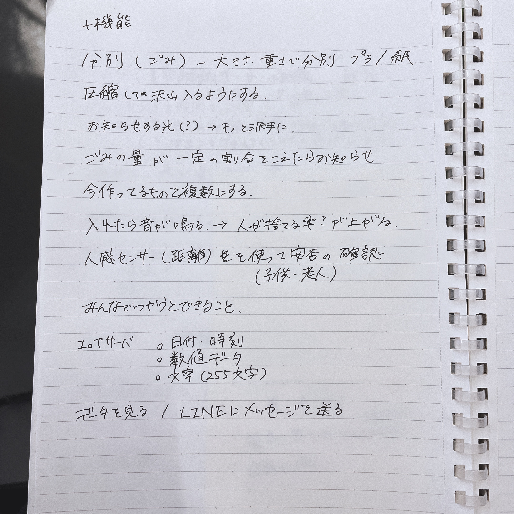
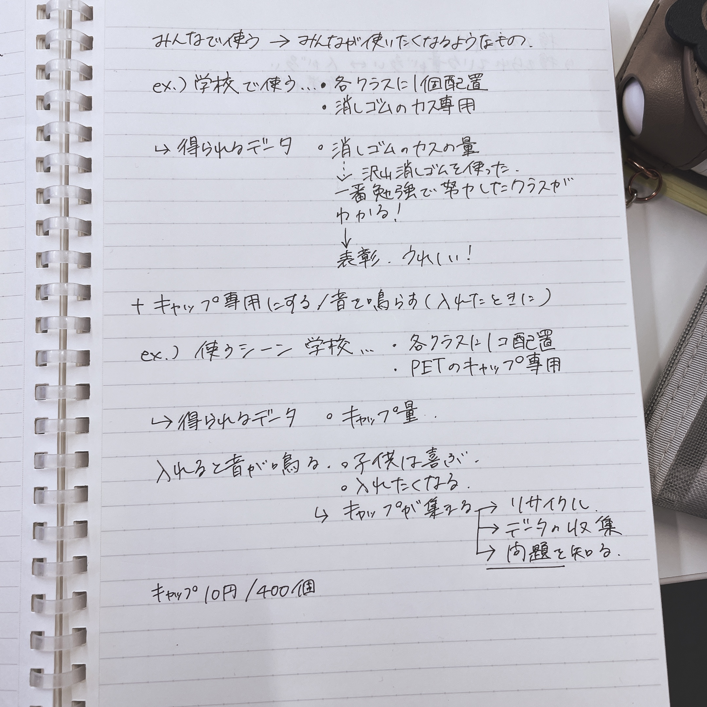

ブレスト作業まとめ①
作るもの…蓋が自動で開いて中身の量がわかるゴミ箱
+で足したい機能案
- 大きさ・重さでゴミ分別(プラスチック/紙など)
- 圧縮して沢山入れられるような機能
- ごみの量が一定を超えたらお知らせする機能をもっと他のものに出来ないか？
- 今作っているものを複数にして用途を分ける
- 何か入れたら音を鳴らす→人が捨てる確率が上がる？捨てたくなるゴミ箱
- 人感センサー利用時の反応を利用して子供・老人などの安否確認に使えないか？
課題:IoTである意味は？…みんなでゴミ箱を使うと何が出来そうか？
みんなで使う→みんなが使いたくなるようなモノ？(設計・用途)
学校で使うとしたら…？
・各クラスに1個ずつ設置したり
・消しゴムのカス専用など？
→得られるデータ…消しゴムのカスの量・開けた回数
沢山消しゴムを使った
→1番勉強して美化に取り組んだクラスがわかる/1人あたりどれほどの量の消しゴムを利用したか
→表彰などで勉強へのモチベーション向上を図るなど…？


NEXT続きのページへ